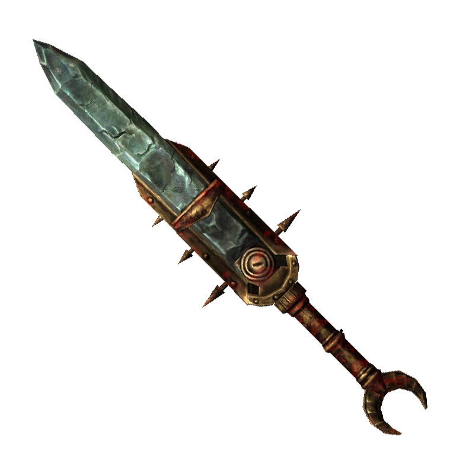
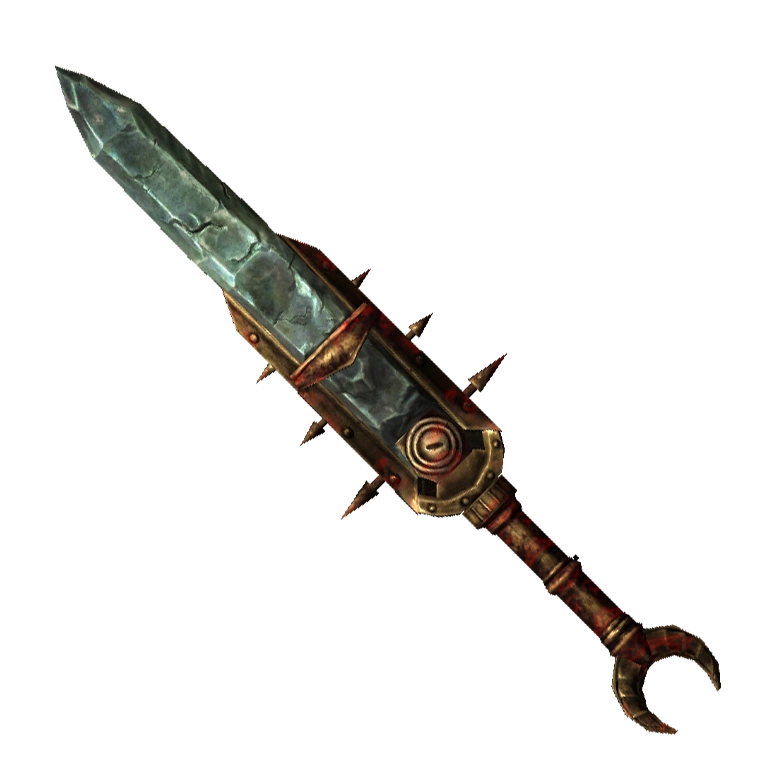

| Оружие Скайрима | Таблица |
Эта статья содержит перечень всего одноручного оружия, встречающегося в The Elder Scrolls V: Skyrim. Некоторые его виды попадаются в продаже и при исследовании мира, а кое-что даже можно выковать самому. Параметры атаки зависят от владения навыком одноручного оружия: чем лучше он развит, тем выше наносимый урон.
Урон в большинстве случаев можно повысить, затачивая оружие с помощью точильного камня. Для этого необходимо наличие определённого материала. При этом важную роль играет уже другой навык — кузнечного дела.
В Скайриме существует несколько типов оружия:
Это оружие можно создать своими руками в кузницах при соблюдении всех условий, включающих в себя наличие нужного материала и конкретных способностей кузнеца. Помимо этого, иногда требуется завершить ещё и специальное задание.


Такое оружие встречается у некоторых врагов, представителей определённых фракций или членов гильдий. Доступно только в качестве трофея и, в отдельных случаях, в продаже. Невозможно создать самому.


Может быть найдено при определённых условиях. Встречается в единственном экземпляре, хотя в некоторых случаях может обновиться вместе со всем содержимым локации. Невозможно создать самому.


Это оружие можно использовать и даже улучшать, но для завершения задания придётся с ним расстаться. Встречается в единственном экземпляре. Невозможно создать самому.


Артефакты являются наградой за выполнение определённых заданий. Чары, наложенные на них, редки и уникальны, их невозможно изучить с помощью пентаграммы душ. Артефакты зачастую имеют незаурядный внешний вид и встречаются в единственном экземпляре. Невозможно создать самому.
 
